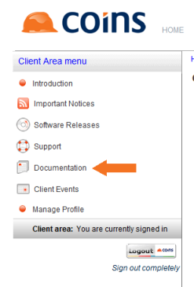

Updating documentation
- Go to the
If the link above did not open the OA Documentation Update page:
- Click Documentation.

- Then click OA Documentation Update.

- On the OA Documentation Update page, click the images.tar link and download the images file to your PC.
- Right-click one of the documentation links, choose Save As, and download the documentation file to your PC. The OAWebDoc.Dat file contains all the current

- Use FTP (or similar) to transfer the images.tar file and the .Dat files to your
- In
syloadwh.p ("/home/user1/WDSC.Dat")
You will need to run this separately for each .Dat file you download. The updated documentation is then available from